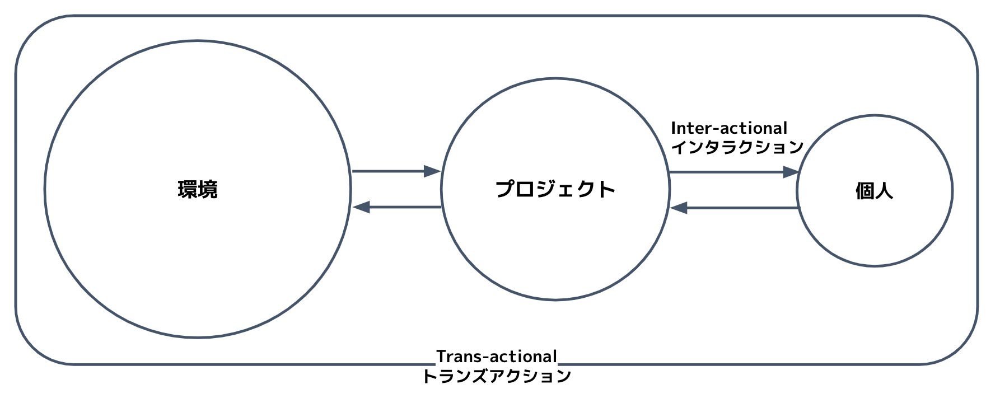

さて「プロジェクトとは何か」という問いから出発したこの連載だが、考えれば考えるほどに、そこに「プロジェクトがある」とは言えないことが分かってきた。むしろ、それを「プロジェクトと呼ぶ」という実践の結果として組織されている現象のことではないか。事前に「ある」と考えて行為することで結果として「生じる」という意味において、逆説的でありトートロジカルな結論だと言えるだろう。
これまで見てきた通り、日々のありふれた実践に内在しながら、しかも自己組織化を促し、かつ自身も変化していくような「謎の素材」があるとすれば、それはコミットメントだろう。「AはBだ＝私はAはBのようにみえる」。コミットメントは小さな単位では観察による区別から、社会的な単位では「名指し」をはじめとする発話や行為、果てにはプロジェクトそのものに至るまで、われわれの認識や行為の隅々に浸透している。
コミットメントが収斂していくことはない (エヴァンゲリオンの人類補完計画などしない限り) 。なぜなら人はそれぞれ観点が異なるからだ。それはプロジェクトの自己組織化において問題にはならない。むしろ、こうしたコミットメントの齟齬はプロジェクトを推進する原動力となりつつ、新たなコミットメントを紡ぎ (学習び) 出していく。
前号では、こうした自己組織化を促進しうる規範について考えてみた。ケアの実践とも呼びうるこの規範は「真実とは客観的事実ではなく、むしろ検証されたコミットメント (これまで我々にはAはBのように見えてきた) に過ぎない」ということに対して素直になろうという呼びかけでもある。それと異なる観点を提供できるのが反証できる時だけというのは、あまりに窮屈だろう (もちろん厳密な科学的検証であれば別だが) 。そうではなく「その人がそう感じているのであれば、それを真実として捉えていこう」という発想によって、プロジェクトは違った自己組織化ができるのではないか。いわゆるプロジェクトを主語 (自己言及) にした論理だけでなく、「私は」に始まる個人を主語 (自己言及) にした論理をも包含して、プロジェクトが発達するようになるだろう。
これを上手く行えば、プロジェクトも個人も同一性が保たれながらドリフトしていく。つまり双方にとって自己組織的に発達していける。このとき両者は互いに包含関係として切っても切れない関係にある (デューイがTrans-activeと呼んだ構造) 。プロジェクトの制約を所与として個人は動くが、プロジェクトもまた個人の観点や知覚・行為の中で進んでいくのだ。さらに言えば、このプロジェクト＝個人間の関係は、環境＝プロジェクト間にも相似的に当てはまりうる (下図) 。プロジェクトは環境の制約を所与として動くが、環境はプロジェクトによって関係先として立ち現れている。
※互いと「やりとり」をする関係はInter-actional、相互に包含している関係はTrans-actional (図示できず)
このように、環境、プロジェクト、個人が三層で有機的につながり合っているプロジェクトは、世の中にどれくらいあるのだろうか。いずれも自律的でありながら、互いを活かし合っている状態。この連載のタイトルには「自己組織化する様子を見てみたい」という想いの他に、「このようなプロジェクトが増えてほしい」という期待も込められている。どんな実践がこうしたプロジェクトをかのうにするのか気になるのは私だけではないだろう。
さてここまできて、どうも解決されない気持ちがある。それは、言語に偏り過ぎているのではないかという不安である。これはデューイの研究者の Elkajaer 先生や、私に現象学を教えてくれた印部さんから指摘を受けたことでもある。コミットメントについて考えるときに、セラーズやブランダムのように言語を介して理解するのは容易だ。なぜなら、我々は日頃から言語で自分の思考を相対化できるからである。しかし、言語が全てではない。オフリス・アピフェラ (蜂蘭) は言語を使わず、視覚情報を得ることすらなく、マルハナバチの雌蜂にそっくりの姿に自らを進化の末に変形させられるのである。
自己組織化について語ってきたこの連載だが、果たしてどこまでが「自己」なのか、あるいはそれに「言及する」とはいかなることかに答えられただろうか。これを、言語の仕組み (あるいは言説的実践) に頼らず説明できなければ、プロジェクトという現象をしっかりと理解できたことにはならないのではないだろうか。その答えが見つかるかどうかは、次の連載に持ち越してみたい。

{kind=link}